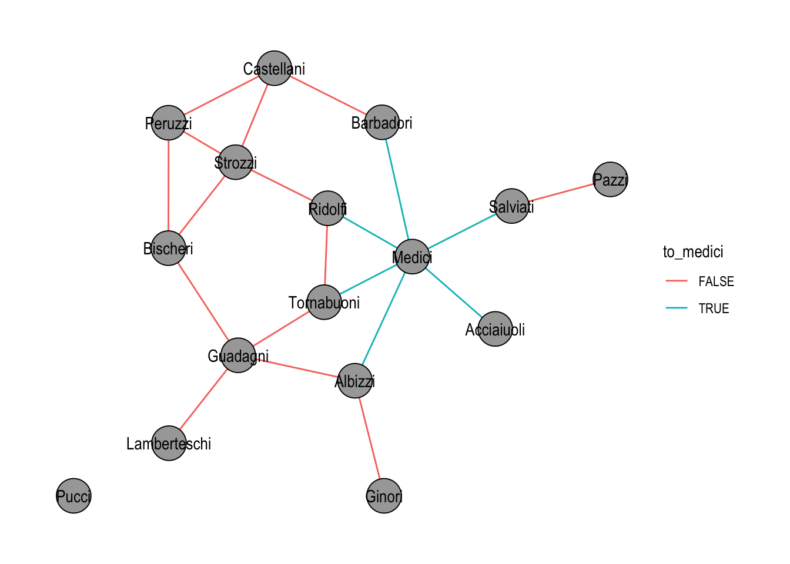
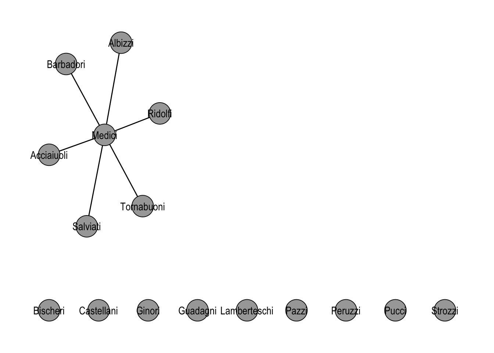
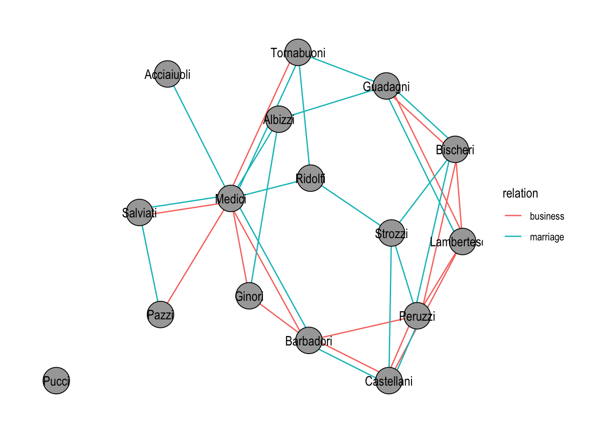
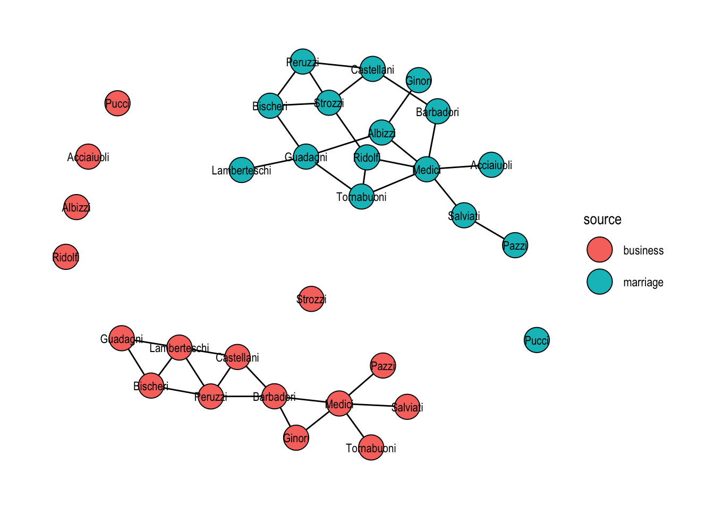

library(tidygraph)
library(networkdata)
library(dplyr)21 Basics of tidygraph
This chapter walks through the foundation of tidygraph before any network descriptors come into play: how a graph is stored as a pair of tables in a tbl_graph, how activate() decides which of the two tables a verb sees, how the standard dplyr verbs and joins carry over, and what the tidygraph-specific morph() family adds on top. The Florentine marriage network from the Descriptive part is reused throughout so that each idiom can be compared against the igraph equivalent you have already seen.
21.1 Packages Needed for this Chapter
21.2 Graph Structures
We will use the Florentine Families marriage network as a running example. The dataset ships as an igraph object and converts to a tbl_graph with as_tbl_graph().
data("flo_marriage")
flo_tidy <- as_tbl_graph(flo_marriage)
flo_tidy# A tbl_graph: 16 nodes and 20 edges
#
# An undirected simple graph with 2 components
#
# Node Data: 16 × 4 (active)
name wealth priors ties
<chr> <dbl> <dbl> <dbl>
1 Acciaiuoli 10 53 2
2 Albizzi 36 65 3
3 Barbadori 55 0 14
4 Bischeri 44 12 9
5 Castellani 20 22 18
6 Ginori 32 0 9
7 Guadagni 8 21 14
8 Lamberteschi 42 0 14
9 Medici 103 53 54
10 Pazzi 48 0 7
11 Peruzzi 49 42 32
12 Pucci 3 0 1
13 Ridolfi 27 38 4
14 Salviati 10 35 5
15 Strozzi 146 74 29
16 Tornabuoni 48 0 7
#
# Edge Data: 20 × 2
from to
<int> <int>
1 1 9
2 2 6
3 2 7
# ℹ 17 more rowsPrinting a tbl_graph surfaces the two tables it wraps: a node data frame and an edge data frame. The header tells you which of the two is currently active.
class(flo_tidy)[1] "tbl_graph" "igraph" The class tbl_graph inherits from igraph, so anything written against igraph accepts a tbl_graph unchanged. No conversion is needed to go back to an igraph workflow.
If you need to build a network from scratch, tbl_graph() takes the two data frames directly and is essentially the tidy counterpart of graph_from_data_frame(). For the common random graph generators, the create_*() family produces deterministic graphs (lattices, stars, rings) and play_*() produces stochastic ones (Erdős–Rényi, preferential attachment, island models).
create_ring(5)# A tbl_graph: 5 nodes and 5 edges
#
# An undirected simple graph with 1 component
#
# Node Data: 5 × 0 (active)
#
# Edge Data: 5 × 2
from to
<int> <int>
1 1 2
2 2 3
3 3 4
# ℹ 2 more rowsplay_gnp(10, 0.3)# A tbl_graph: 10 nodes and 27 edges
#
# A directed simple graph with 1 component
#
# Node Data: 10 × 0 (active)
#
# Edge Data: 27 × 2
from to
<int> <int>
1 1 10
2 9 1
3 3 2
# ℹ 24 more rowsplay_barabasi_albert(10,2)# A tbl_graph: 10 nodes and 9 edges
#
# A rooted tree
#
# Node Data: 10 × 0 (active)
#
# Edge Data: 9 × 2
from to
<int> <int>
1 2 1
2 3 1
3 4 2
# ℹ 6 more rows21.3 Standard Verbs
The tidy idiom revolves around a small set of verbs like mutate(), select(), filter(), summarise() and joins that transform a data frame. The awkwardness for networks is that a tbl_graph wraps two tables, so a verb has to know which one to operate on. tidygraph solves this with an explicit pointer: whichever table is active is the one the verb sees. The pointer is set with activate(). The default is "nodes", which is why the example above printed the node table on top.
flo_tidy |> activate("edges")# A tbl_graph: 16 nodes and 20 edges
#
# An undirected simple graph with 2 components
#
# Edge Data: 20 × 2 (active)
from to
<int> <int>
1 1 9
2 2 6
3 2 7
4 2 9
5 3 5
6 3 9
7 4 7
8 4 11
9 4 15
10 5 11
11 5 15
12 7 8
13 7 16
14 9 13
15 9 14
16 9 16
17 10 14
18 11 15
19 13 15
20 13 16
#
# Node Data: 16 × 4
name wealth priors ties
<chr> <dbl> <dbl> <dbl>
1 Acciaiuoli 10 53 2
2 Albizzi 36 65 3
3 Barbadori 55 0 14
# ℹ 13 more rowsSwitching the active table lets you attach new edge attributes the same way you would add a new column to any tibble. A useful trick when you need information from the other table is .N() and .E(): .N() returns the node table while edges are active, and .E() returns the edge table while nodes are active. The example below uses .N() to tag each edge according to whether one of its endpoints is the Medici family.
flo_medi <- flo_tidy |>
activate("edges") |>
mutate(to_medici = (.N()$name[from] == "Medici" | .N()$name[to] == "Medici"))The new attribute is immediately available for visualisation, as shown in Figure 21.1.
ggraph(flo_medi, "stress") +
geom_edge_link0(aes(edge_color = to_medici)) +
geom_node_point(shape = 21, size = 10, fill = "grey66") +
geom_node_text(aes(label = name)) +
theme_graph()
filter() behaves the way the table-based intuition suggests, with one asymmetry worth remembering. Filtering on nodes also drops every edge that was incident to a removed node; filtering on edges leaves the node set intact. In Figure 21.2, only the edges touching the Medici survive, while the now-isolated families remain in the plot.
flo_medi |>
activate("edges") |>
filter(to_medici) |>
ggraph("stress", bbox = 10) +
geom_edge_link0(edge_color = "black") +
geom_node_point(shape = 21, size = 10, fill = "grey66") +
geom_node_text(aes(label = name)) +
theme_graph()
21.4 Joins
Networks are sometimes more naturally described as several smaller networks on overlapping actors. The classic Florentine study, for instance, actually records two relations among the same families: marriage ties and business ties. tidygraph offers a handful of verbs for combining such graphs and for pulling in external attribute tables.
graph_join() merges two tbl_graph objects on a shared node key (by default the name column). Nodes that appear in both graphs are identified; edges from both graphs are kept. The networkdata package ships flo_business, the second Padgett relation over the same 16 families, which we load now and turn into a tbl_graph.
data("flo_business")
flo_business_tidy <- as_tbl_graph(flo_business)Before merging, we tag each graph’s edges with the relation they come from, so the combined plot in Figure 21.3 can colour edges by their source network.
marriage_rel <- flo_tidy |>
activate("edges") |>
mutate(relation = "marriage")
business_rel <- flo_business_tidy |>
activate("edges") |>
mutate(relation = "business")
marriage_rel |>
graph_join(business_rel, by = "name") |>
ggraph("stress") +
geom_edge_parallel0(aes(edge_color = relation)) +
geom_node_point(shape = 21, size = 10, fill = "grey66") +
geom_node_text(aes(label = name)) +
theme_graph()
graph_join(). Edges are coloured by the relation they originated from.
When the goal is instead to keep two networks side by side, for example to lay them out together without merging their node sets, bind_graphs() returns the disjoint union. Stress layout then places each component independently, as Figure 21.4 shows.
bind_graphs(
flo_tidy |> activate("nodes") |> mutate(source = "marriage"),
flo_business_tidy |> activate("nodes") |> mutate(source = "business")
) |>
ggraph("kk") +
geom_edge_link0() +
geom_node_point(aes(fill = source), shape = 21, size = 8) +
geom_node_text(aes(label = name), size = 3) +
theme_graph()
bind_graphs(). Each family appears twice and the two components are laid out independently.
Two more verbs, bind_nodes() and bind_edges(), append rows to the active table and are the tidygraph analogues of dplyr::bind_rows(). They are useful when new nodes or edges arrive as a plain data frame.
Finally, because each table inside a tbl_graph is a tibble, any standard dplyr join works once that table is activated. This is the path of least resistance for attaching an external attribute table keyed on the node name:
family_estate <- data.frame(
name = c("Medici", "Strozzi", "Peruzzi", "Guadagni"),
estate = c(15, 14, 2, 2)
)
flo_tidy |>
activate("nodes") |>
left_join(family_estate, by = "name")# A tbl_graph: 16 nodes and 20 edges
#
# An undirected simple graph with 2 components
#
# Node Data: 16 × 5 (active)
name wealth priors ties estate
<chr> <dbl> <dbl> <dbl> <dbl>
1 Acciaiuoli 10 53 2 NA
2 Albizzi 36 65 3 NA
3 Barbadori 55 0 14 NA
4 Bischeri 44 12 9 NA
5 Castellani 20 22 18 NA
6 Ginori 32 0 9 NA
7 Guadagni 8 21 14 2
8 Lamberteschi 42 0 14 NA
9 Medici 103 53 54 15
10 Pazzi 48 0 7 NA
11 Peruzzi 49 42 32 2
12 Pucci 3 0 1 NA
13 Ridolfi 27 38 4 NA
14 Salviati 10 35 5 NA
15 Strozzi 146 74 29 14
16 Tornabuoni 48 0 7 NA
#
# Edge Data: 20 × 2
from to
<int> <int>
1 1 9
2 2 6
3 2 7
# ℹ 17 more rowsNodes without a match simply get NA for the new column, exactly as with an ordinary tibble join.
21.5 Special Graph Verbs
Beyond activate(), tidygraph introduces a small set of verbs that have no direct analogue in dplyr because they only make sense on graphs. The most important is morph(). A morph temporarily reshapes a graph into a different representation, for example the connected components, the shortest path between two nodes, the line graph, or the minimum spanning tree, without committing to that change. Verbs chained after morph() run on the morphed representation, and unmorph() returns to the original graph, propagating any attributes that were added inside the morph back onto the original nodes or edges.
As a first example, we attach the size of each connected component to every node. Inside the to_components morph the graph is effectively split into one sub-graph per component, so graph_order() evaluates separately for each.
flo_tidy |>
activate("nodes") |>
morph(to_components) |>
mutate(component_size = graph_order()) |>
unmorph()# A tbl_graph: 16 nodes and 20 edges
#
# An undirected simple graph with 2 components
#
# Node Data: 16 × 5 (active)
name wealth priors ties component_size
<chr> <dbl> <dbl> <dbl> <dbl>
1 Acciaiuoli 10 53 2 15
2 Albizzi 36 65 3 15
3 Barbadori 55 0 14 15
4 Bischeri 44 12 9 15
5 Castellani 20 22 18 15
6 Ginori 32 0 9 15
7 Guadagni 8 21 14 15
8 Lamberteschi 42 0 14 15
9 Medici 103 53 54 15
10 Pazzi 48 0 7 15
11 Peruzzi 49 42 32 15
12 Pucci 3 0 1 1
13 Ridolfi 27 38 4 15
14 Salviati 10 35 5 15
15 Strozzi 146 74 29 15
16 Tornabuoni 48 0 7 15
#
# Edge Data: 20 × 2
from to
<int> <int>
1 1 9
2 2 6
3 2 7
# ℹ 17 more rowsThe Pucci family, the lone isolate, now carries component_size = 1; every other node carries the size of the giant component.
If you do want to commit to the morphed graph rather than return to the original, use convert() instead of the morph() / unmorph() pair. The next example extracts the shortest path between the Medici and the Pazzi and keeps only that path as the new graph.
medici_id <- which(igraph::V(flo_tidy)$name == "Medici")
pazzi_id <- which(igraph::V(flo_tidy)$name == "Pazzi")
flo_tidy |>
convert(to_shortest_path, medici_id, pazzi_id)# A tbl_graph: 3 nodes and 2 edges
#
# An unrooted tree
#
# Node Data: 3 × 5 (active)
name wealth priors ties .tidygraph_node_index
<chr> <dbl> <dbl> <dbl> <int>
1 Medici 103 53 54 9
2 Pazzi 48 0 7 10
3 Salviati 10 35 5 14
#
# Edge Data: 2 × 3
from to .tidygraph_edge_index
<int> <int> <int>
1 1 3 15
2 2 3 17A related verb, crystallise(), is worth knowing for morphs that naturally return multiple graphs, for instance to_components again, or to_local_neighborhood called on several nodes at once. It materialises the morph as a tibble with one row per sub-graph, which is convenient when you want to iterate.
The catalogue of morphers is large: to_undirected, to_directed, to_simple, to_subgraph, to_contracted, to_complement, to_minimum_spanning_tree, to_dominator_tree, to_linegraph, to_subcomponent, and more. Rather than enumerate them all, the recommendation is to browse ?morphers once so you know what is available and reach for it when the shape of your problem calls for a transformed graph.